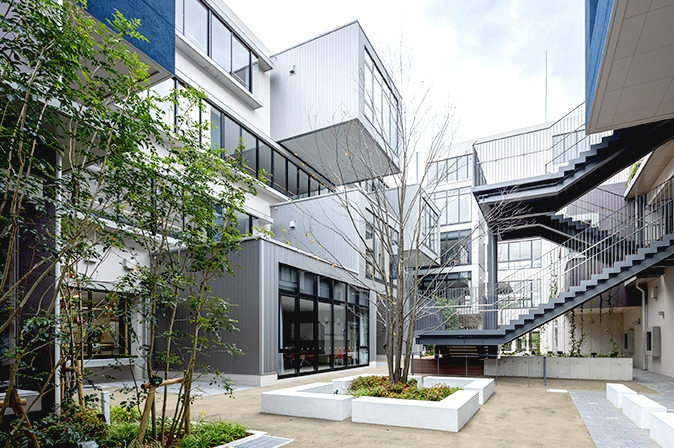
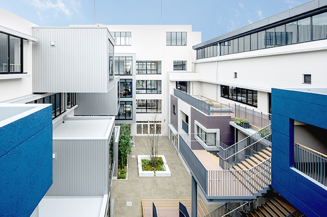

学校紹介JH2233
大阪府立水都国際中学校＆高等学校


住所：大阪府大阪市住之江区南港中３丁目７−１３
電話番号：06-7662-9600 （中学校）
電話番号：06-7662-9601 （高校）
軽音楽部
中学生から高校生までたくさんの生徒が所属している。毎季節ごとにフェスがありお客さんもたくさん来てくれている。
門球部
地域の大会や全国大会に出場。毎週火、木にポートタウン西で練習している。
| 顔写真 | 名前 |
|---|
 | 太田校長 |
 | DR.JB |
リンク
大阪府立水都国際中学校・高等学校
リンク
出席番号が31番の友だち
出席番号が24番の友だち